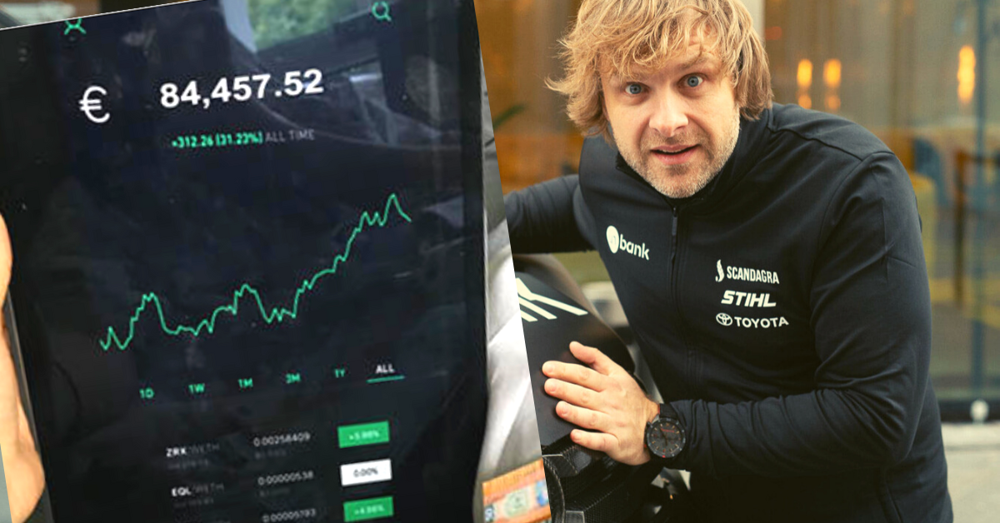

VYRESNIO AMŽIAUS DARBUOTOJŲ ĮSITRAUKIMAS Į DARBĄ

Darbo jėga daugelyje šalių greitai sensta. Manoma, kad
per ateinančius 15 metų vyresnio amžiaus žmonių skaičius labiausiai augs Lotynų Amerikoje ir Karibuose.
Prognozuojama, kad ten 60-ies ir vyresnio amžiaus žmonių padaugės net 71 %, Azijoje – 66 %, Afrikoje – 64 %,
Okeanijoje – 47 %, Šiaurės Amerikoje – 41 % ir Europoje –
23 %. 2015 m. vienas iš aštuonių žmonių pasaulyje buvo
60-ies metų amžiaus arba vyresnis. Prognozuojama, kad iki
2030 m. šis skaičius augs ir pasieks vieno iš šešių žmonių,
vyresnių nei 60 metų, lygį. Be to, XXI a. viduryje numatoma, kad 60-ies arba vyresnio amžiaus bus jau vienas iš
penkių žmonių pasaulyje (Department of Economic and...
2015).
Senėjimo procesas yra labiausiai pažengęs dideles
pajamas gaunančiose šalyse. 2015 m. Japonijoje gyveno net
33 % 60-ies ar vyresnių viso pasaulio žmonių. Vokietijoje
ir Italijoje 60-ies ar vyresnių žmonių yra net 28 %, o
Suomijoje tokių žmonių gyvena 27 %. Iki 2030 m. vyresnio
amžiaus žmonės turėtų sudaryti daugiau nei 25 % Europos
ir Šiaurės Amerikos populiacijos, 20 % Okeanijos, 17 %
Azijos, Lotynų Amerikos ir Karibų, taip pat 6 % Afrikos
populiacijos (Department of Economic and... 2015).
2015 m. sausio 1 d. 28-iose Europos Sąjungos valstybėse gyveno 508,5 mln. gyventojų. Jauni žmonės (nuo
0 iki 14 metų) sudarė 15,6 % visų gyventojų, darbingo
amžiaus asmenų (nuo 15 iki 64 metų amžiaus) – 65,6 %.
Vyresnio amžiaus žmonių (65 metų ar vyresnių) buvo
18,9 %, o tai 0,4 % daugiau, palyginti su 2014 m., ir 2,3 %
144
departamentas 2016), o tai turi esminę įtaką šalyje likusių
gyventojų amžiaus ir darbo jėgos struktūrai. Jeigu ateityje
visos aplinkybės klostysis panašiai, galima teigti, kad darbo jėgą šalyje sudarys vis daugiau vyresnio amžiaus darbuotojų ir organizacijos privalės priimti šį iššūkį bei kurti
veiksmingus metodus, kaip užimti, įdarbinti ir reikiama
linkme nukreipti vyresnio amžiaus darbuotojus bei išlaikyti reikiamą darbo našumą. Remiantis Europos statistikos
agentūros (Eurostat) duomenimis, galima teigti, kad kuo
asmuo vyresnis, tuo didesnė tikimybė, jog jo padėtis darbo
rinkoje bus nepalanki. Įsitraukimo į darbo rinką galimybes
taip pat mažina ir kiti veiksniai, t. y. lytis, negalia, išsilavinimo stoka, menka/nepakankama profesinė kvalifikacija
ir t. t. Tos pačios agentūros teigimu, įvairių tarptautinių
ir nacionalinių tyrimų rezultatai atskleidžia, kad vyresni
(50–55 metų amžiaus) asmenys apskritai dažniau susiduria
su sunkumais darbo rinkoje. Sulaukę šio amžiaus ir vyresni
asmenys ne tik patenka į atitinkamą socialinę atskirtį darbo
paieškos metu, tačiau daug dažniau netgi patiria diskriminaciją darbovietėje.
Vyresnio amžiaus darbuotojų įsitraukimas nagrinėjamas tiek užsienio mokslininkų (Erickson 2005; Bakker
et al. 2011; Ologbo, Saudah 2012 ir kt.), tiek Lietuvos
mokslininkų (Kumpikaitė, Rupšienė 2008; Goštautaitė,
Bučiūnienė 2015a, 2015b ir kt.) darbuose. Kita vertus,
vis dar stokojama mokslinių tyrimų, sudarančių galimybes
pateikti praktines rekomendacijas, atsižvelgiant į šalies
kontekstą. Todėl šio straipsnio tikslas – apžvelgti darbo
pobūdžio charakteristikų poveikį įsitraukimui į darbą, paties darbuotojo charakteristikų įtaką įsitraukimui į darbą,
amžiaus ir su juo susijusių veiksnių įtaką įsitraukimui į
darbą bei ryšius tarp amžiaus ir pasiekimų. Atliktas tyrimas grindžiamas mokslinės literatūros analize ir sinteze
vyresnio amžiaus darbuotojų įsitraukimo į darbą klausimais. Straipsnis integruoja svarbiausius tyrimus vyresnio
amžiaus darbuotojų įsitraukimo į darbą srityje ir pateikia
rekomendacijas būsimiems moksliniams tyrimams.
Įsitraukimo į darbą samprata
Įsitraukimas į darbą kiekvienam individui gali reikšti skirtingus dalykus ir būti paaiškintas daugybe skirtingų apibūdinimų, palyginimų ir pan. Dėl to įsitraukimo į darbą
tema, kaip mokslo objektas, yra itin populiarus analizuojant
žmogiškųjų išteklių valdymą, ieškant būdų, kaip jį pagerinti, keičiant požiūrį į dabar taikomas teorijas. Egzistuoja
daug mokslinių šaltinių ir praktinių įžvalgų šia tema, o tai
geriausiai įrodo „Google Mokslinčius“ paieškoje rasti rezultatai. Lietuvių kalba pateikus frazę „įsitraukimas į darbą“
paieška randa 5150 rezultatų, o anglų kalba frazė „work
engagement“ – 2590 000 rezultatų. Todėl galima daryti
išvadą, kad įsitraukimas į darbą yra plačiai analizuojamas
tarp užsienio ir Lietuvos mokslininkų, ši tema yra aktuali
ir šiuolaikiška.
Žmogiškųjų išteklių pagrindas yra žmogus ir gebėjimai jį nukreipti organizacijai reikiama linkme, kad būtų
galima pasiekti norimų rezultatų. Darbuotojo įsitraukimas
į darbą yra tų gebėjimų bei žmogaus asmeninių savybių
sąveikos rezultatas. Taip pat darbuotojų įsitraukimas turi
teigiamą ryšį su produktyvumu, pelningumu, darbuotojų
išlaikymu, saugumu ir klientų pasitenkinimu. Kalbant apie
visuotinai priimtą, konkretų pozityviojo įsitraukimo į darbą
apibrėžimą, galima pastebėti, kad tarp praktikų ir mokslininkų nėra bendro susitarimo dėl šio reiškinio koncepcijos, tačiau plačiai sutariama, kad pozityvųjį įsitraukimą į
darbą sudaro gebėjimo (energija, gyvybingumas) ir noro
dirbti (aktyvus dalyvavimas darbinėje veikloje) bei atsidavimo derinys (Bakker et al. 2011). Taigi, ieškant atsakymų
į klausimą, kas lemia vyresnių darbuotojų įsitraukimą į
darbą, pirmiausia svarbu žinoti, kaip įsitraukimas į darbą
apibrėžiamas, kokie yra įsitraukimą lemiantys veiksniai ir
kaip šį procesą galima valdyti.
Ologbo ir Saudah (2012) teigia, kad darbuotojo įsitraukimas tapo kritine organizacine verslo problema pasauliui atsigaunant po buvusio ekonomikos nuosmukio ir
stengiantis, kad ši grėsmė neiškiltų vėl. Stengiamasi skleisti žinią, kad didžiausias organizacijos turtas yra jos žmonės (Korsakienė et al. 2015; Prakapavičiūtė, Korsakienė
2016). Todėl organizacijos vis labiau į strateginę darbotvarkę stengiasi įtraukti ir žmogiškųjų išteklių valdymą.
Tuo siekiama didesnio darbuotojų dalyvavimo, įsitraukimo, įsipareigojimo stiprinimo. Be to, geresnė gyvenimo
darbe pusiausvyra stipriai keičia santykius tarp darbdavių
ir darbuotojų. Darbuotojų įsitraukimas į darbą (angl. job
involvement arba work engagement) mokslininkus, tyrėjus, specialistus domina jau keletą dešimtmečių. Šios
žmogiškųjų išteklių dalies tyrinėjimų pradininkais laikomi
T. M. Lodahl ir M. Kejner (1965), įsitraukimą į darbą apibūdinę kaip žmogaus psichologinės identifikacijos su darbu
laipsnį arba kitaip – darbo svarbos savo bendram įvaizdžiui
lygį. Kiti vėlesnio laikotarpio mokslininkai šį apibrėžimą
laikė pagrindu ir savo moksliniuose darbuose jį praplėsdavo, modifikuodavo ar transformuodavo, orientuodamiesi į
skirtingus dalykus. Paullay, Alliger ir Stone-Romeo (1994)
įsitraukimą į darbą apibūdino kaip užimtumo bei susirūpinimo savo darbu laipsnį teigdami, kad Lodahl ir Kejner
(1965) siūlytas apibrėžimas yra klaidingas, nes nurodo, ne
kiek žmogus apskritai yra įsitraukęs ir reiklus savo dabartiniame darbe, o kokia yra bendra darbo svarba žmogaus
gyvenime (nekalbama apie konkretų darbą). Vienas iš šių
145
mokslininkų siekių taip pat buvo rasti esminius skirtumus
tarp susitelkimo į darbą (angl. work centrality) ir įsitraukimo į darbą, tačiau skirtumų tarp šių sąvokų jie taip ir neatskyrė. Skirtingu laikotarpiu pateikti ir dažniausiai cituojami
moksliniuose darbuose apibrėžimai, aiškiausiai ir geriausiai
atspindintys įsitraukimo į darbą reikšmę, pateikiami 1 lentelėje.
Giliau pažvelgus į visas šias sąvokas chronologine
seka, matyti, kad ankstesniais metais požiūris į įsitraukimą į darbą buvo kiek labiau individualizuotas žmogaus
poreikių prasme, nes įsitraukimas traktuojamas kaip poreikio išreikšti save rezultatas. Kiek vėliau prie poreikio
išreikšti save pridedamas ir poreikis gauti pasitenkinimą
darbe, tobulėti, užsiimti įdomia veikla. Erickson (2005)
pateikiamas apibrėžimas jau kiek labiau primena šiuolaikinį
organizacijų požiūrį į žmogų, apibrėžimas formuluojamas
produktyvumo požiūriu, toliau vystoma produktyvumo ir
neabejingumo įmonės reikalams svarba. Taigi tokia seka
rodo, kad tyrimai šioje srityje skatina platesnį, daugialypį
mąstymą vertinant darbuotojo įsitraukimą į darbą.
Mokslininkai susidūrė su problemomis ne tik apibrėždami, bet ir tirdami įsitraukimą į darbą (Igbaria et al.
1994). Dėl skirtingų šio veiksnio koncepcijų interpretacijų
buvo sunku jį išmatuoti ir vienodai interpretuoti duomenis.
Atliekant tyrimus, pagrindinės problemos kilo dėl to, kad
įsitraukimas į darbą dažnai buvo sujungiamas su pasitenkinimu darbu, įsipareigojimu darbui ar organizacijai bei
motyvacija (Brown 1996; Elloy, Terpening 1992; Igbaria
et al. 1994). Kai kurie autoriai savo darbuose sugebėjo
išspręsti šią problemą ir atskyrė kitus veiksnius (pasitenkinimą darbu ir motyvaciją) nuo įsitraukimo į darbą (Brown
1996). R. N. Kanungo (1979) įsitraukimą į darbą apibrėžė
kaip žmogaus psichologinės identifikacijos su darbu būseną, nurodančią, kiek asmuo užsiėmęs ir rūpinasi savo
turimu darbu. Taip pat jis sukūrė ir metodiką, skirtą įsitraukimui į darbą, kaip visiškai atskiram veiksniui, matuoti.
Motyvacija, pasitenkinimas darbu, organizacinis įsipareigojimas ir kt. ilgainiui kitų mokslininkų buvo pripažinti kaip
atskiri klausimai, nors ir yra susiję su įsitraukimu į darbą,
tačiau empiriškai negali būti tapatinami su įsitraukimu į
darbą (Igbaria et al. 1994). Petrou et al. (2012) teigia, kad
du iš trijų veiksnių (darbo išmanymas, darbo ištekliai ir
darbo iššūkiai) yra teigiamai susiję su įsitraukimu į darbą.
AON Hewitt tyrimai (Valstybės žinios 2013) rodo, kad
vadovai yra 30 % labiau linkę veikti skatindami darbuotojų
įsitraukimą, pamatę, kokią tiesioginę įtaką darbuotojų įsitraukimas turi jų organizacijos verslo rezultatams. Tačiau
iki šiol pasigendama vieningos mokslininkų ir tyrėjų nuomonės, kaip reikėtų tiksliai apibrėžti ir vertinti įsitraukimą į darbą, kokios priežastys jam daro įtaką, kokios yra
pasekmės ar sąsajos su kitais panašiais veiksniais. Tačiau
svarbu paminėti, kad nemažai mokslininkų teigiamai vertina R. N. Kanungo (1979) siūlomą apibrėžimą ir metodiką
dėl šio veiksnio laikymo atskiru, todėl jį dažnai naudoja
tyrimuose.
1 lentelė. Įsitraukimo į darbą apibrėžimai
Table 1. The concepts of work engagement definitions
Autorius Apibrėžimas
Kanungo (1979) Įsitraukimas į darbą – žmogaus psichologinės identifikacijos su darbu būsena, nurodanti, kiek asmuo
užsiėmęs ir rūpinasi savo turimu darbu.
Kahn (1990) Įsitraukę darbuotojai fiziškai, kognityviai ir emociškai susiję su savo darbo vaidmenimis. Individualiame
ar grupiniame darbe asmenys tampa fiziškai įsitraukę į užduotį, kognityviai aktyvūs ir empatiškai susiję
su kitais asmenimis. Įsitraukimas reiškia sukoncentruotą energiją, nukreiptą siekti organizacinių tikslų.
Ši mintis atspindi pagrindinę Kahn (1990) teorinio modelio idėją – įsitraukę asmenys siekia elgtis taip,
kad išreikštų save dirbdami.
Harter et al. (2002) Darbuotojų įsitraukimas reiškia asmens įsitraukimą ir pasitenkinimą, taip pat entuziazmą darbe.
Schaufeli, Bakker (2004) Įsitraukimas į darbą apibrėžiamas kaip patenkinantis tobulėjimo poreikį (angl. fulfilling) su darbu
susijusią psichinę (angl. state of mind) būseną, kuri apibūdinama energingumu, atsidavimu darbui ir
pasinėrimu į darbą. Energingumas atspindi aukštą energijos ir aktyvumo lygį, gebėjimą greitai atgauti
jėgas, įdėtas pastangas ir atkaklumą susiduriant su sunkumais. Atsidavimas darbui nusako prasmės
ir įkvėpimo patyrimą darbe, entuziazmą ir didžiavimąsi savo darbu bei jo suvokimą kaip iššūkį.
Bakker et al. (2011) teigimu, įsitraukę darbuotojai savo darbą patiria kaip stimuliuojančią ir energijos
teikiančią veiklą, kuriai skiriama laiko ir dedama pastangų, kaip reikšmingą ir prasmingą siekį, įdomią ir
įtraukiančią veiklą.
Erickson (2005) Darbuotojų įsitraukimas suvokiamas kaip pagrindinė produktyvaus darbuotojo sudedamoji dalis.
Saks, Rotman (2006) Darbuotojų įsitraukimas į darbą prognozuoja darbuotojų rezultatus, organizacinę sėkmę ir finansinės
veiklos rezultatus.
Shuck, Wollard (2010) Įsitraukimas į darbą – tai atskiro darbuotojo pažinimo, emocijų ir elgesio būsena, nukreipta norimų
organizacinių rezultatų link.
146
Darbuotojų įsitraukimas yra svarbus veiksnys, kuris daro įtaką beveik visoms žmoniškųjų išteklių valdymo
sritims. Darbuotojai nebus visiškai įsitraukę į darbą, jeigu
visi žmoniškųjų išteklių klausimai nebus tinkamai kontroliuojami. Darbuotojų įsitraukimas į darbą, galima sakyti,
remiasi ankstesnėmis koncepcijomis, pavyzdžiui, pasitenkinimu darbu, darbuotojų įsipareigojimu ir motyvacija,
organizacinio pilietiškumo elgesiu. Įsitraukę darbuotojai
yra emociškai prisirišę prie savo organizacijos ir aktyviai
dalyvauja savo darbe su didžiuliu entuziazmu (Markos,
Sridevi 2010).
Veiksniai, lemiantys vyresnių darbuotojų
įsitraukimą į darbą
Kas yra vyresnio amžiaus darbuotojas? Klausimas nėra
lengvas ir nėra bendro sutarimo, kaip šią sąvoką apibrėžti.
Skirtingos institucijos ir organizacijos šiam apibrėžimui
naudoja gana platų amžiaus spektrą – maždaug nuo 40 iki
65 metų amžiaus. Pavyzdžiui, JAV Darbo departamento
teigimu, vyresnis darbuotojas yra 55 metų ar vyresnis, o
nuo amžiaus diskriminacijos Užimtumo akto pagrindu nuo
1967 m. apsauga suteikiama visiems dirbantiems žmonėms, vyresniems nei 40 metų (National Healthy worksite
2012). Tyrimuose, kuriuose analizuojamas dalyvavimas
darbo rinkoje, terminas „vyresnio amžiaus darbuotojas“
paprastai priskiriamas asmenims, kurių amžius – 50–55
metai, ir vyresniems. Ši riba pasirenkama todėl, kad
daugelyje šalių būtent šioje amžiaus grupėje vyksta dalyvavimo darbo rinkoje nuosmukis (Kooij et al. 2007).
JAV Nacionalinis senėjimo institutas taip pat vyresnio
amžiaus darbuotoją apibūdina kaip 55 metų ar vyresnį
asmenį. Jungtinės Tautos vyresnio amžiaus darbuotojų
grupę pripažįsta kaip 60 metų ar vyresnius. Kituose tyrimuose 59 metai yra kaip viršutinė riba, nuo kurios asmuo
identifikuojamas kaip vyresnio amžiaus darbuotojas, nors
dažniausiai ta riba apibrėžiama tiesiog kaip „55 metai ir
daugiau“ (Farrow, Reynolds 2012).
World Health Organization atliktos apklausos (2016),
kurioje dalyvavo daugiau nei 83 000 žmonių iš 57 valstybių, duomenimis, 60 % respondentų pasisakė, kad vyresnio
amžiaus žmonių grupės, jų nuomone, yra negerbiamos.
Pastebėta, kad žemiausias pagarbos lygis yra dideles pajamas gaunančiose šalyse. Vyresnio amžiaus žmonės ir
Lietuvoje kasmet yra viena iš labiausiai diskriminuojamų
socialinių grupių (Žmogaus teisių stebėjimo institutas 2016).
Lietuvos darbdavių požiūrį į vyresnio amžiaus darbuotojus
nagrinėjo įvairūs mokslininkai. Yra atlikti keli tyrimai apie
vyresnio amžiaus bedarbių integraciją į darbo rinką ir su
tuo susijusias problemas (Okunevičiūtė Neverauskienė,
Moskvina 2008; Raščiuvienė 2009; Milkinaitė 2011).
J. Raščiuvienė (2009) teigia, kad, visuomenės požiūriu, vyresnį amžių galima traktuoti kaip atstumiantį, problematinį
tarpsnį, kuris asocijuojasi su skurdu, nedarbu, silpnėjančia
sveikata ir socialine atskirtimi.
Vyresnio amžiaus darbuotojų paklausa darbo rinkoje
iš dalies priklauso ir nuo to, ar asmuo vis dar gali patenkinti
darbdavio bei rinkos poreikius tiek fiziškai, tiek protiškai
(Conen et al. 2009). Autorius teigia, kad su amžiumi vyksta
negrįžtami procesai, tokie kaip laipsniškas fizinių sugebėjimų mažėjimas. Žmogaus, peržengusio 30 metų ribą, jie
mažėja apie 0,8–1,0 % per metus. Kartu su amžiumi mažėja
ir psichiniai gebėjimai, informacijos priėmimo ir mąstymo
procesai, gebėjimai spręsti problemas lėtėja, silpnėja atmintis (Conen et al. 2009).
Šiomis dienomis, sparčiai besivystant technologijoms ir tobulėjant organizacijų vadybai, vyresnio amžiaus
darbuotojai itin dažnai susiduria su kvalifikacijos nuvertėjimo (angl. dequalification) ir asmeninių kompetencijų
mažėjimo problema (Kroll 2003). Toks nuvertėjimas, atsižvelgiant į sunkią vyresnio amžiaus darbuotojų padėtį
darbo rinkoje, požiūrį į juos, yra gerokai didesnė problema
nei pats žmogaus senėjimo procesas. Vyresnio amžiaus
darbuotojai, norėdami išlikti rinkoje, turi nuolat tobulintis, atnaujinti savo kompetencijas ir žinias. Technologijų
plėtra reikalauja laiko ir investicijų į kvalifikacijos kėlimą
bei mokymą, kas vyresniam asmeniui yra komplikuota dėl
lėtesnio informacijos apdorojimo, silpnėjančios atminties,
lėšų trūkumo ir pan. Tai dažnai yra iššūkis vyresnio amžiaus
darbuotojams (Hashim, Wok 2011). Taigi, akivaizdu, kad
visos minėtos aplinkybės riboja vyresnių žmonių įsitraukimą į darbą, o kartu galima sakyti, kad ir įsipareigojimas
organizacijai, kurioje vyresnio amžiaus darbuotojas dirba,
mažėja. Kumpikaitė ir Rupšienė (2008) pabandė apžvelgti pasaulinius tyrimus, kuriuose analizuojami veiksniai,
didinantys įsipareigojimą organizacijai. Autorės išskiria
šiuos veiksnius: amžių, lytį, darbo stažą, išsilavinimą ir
užimamas pareigas, santykius su bendradarbiais ir vadovu
bei kt. Skirtingų užsienio autorių įsipareigojimo veiksnių
klasifikavimas, remiantis Kumpikaite ir Rupšiene (2008),
pateikiamas 2 lentelėje.
Tad galima drąsiai teigti, kad yra bent keletas sudėtinių dalių, lemiančių lengvesnį ar sunkesnį vyresnio amžiaus darbuotojų įsitraukimą į darbą, didesnį ar mažesnį
įsipareigojimą organizacijai: atliekamo darbo charakteristikos, su pačiu darbuotoju susijusios charakteristikos,
su amžiumi susiję veiksniai, amžiaus ir pasiekimų ryšys
bei panašūs kintamieji.
147
Atliekamo darbo charakteristikos
Fried ir Ferris (1987) atlikta 200 studijų, empiriškai tyrusių darbo charakteristikų modelį, analizė patvirtino ryšius
tarp darbo charakteristikų ir psichologinių bei elgsenos
pasekmių. Daug vėliau ir bene iki šiol populiariausią bei
išsamiausią darbo charakteristikų, arba kitaip – dizaino
klasifikaciją, pateikė Humphrey, Nahrgang ir Morgeson
(2007). 259 studijų analizė, tyrusi praplėstą darbo charakteristikų teoriją integruojant motyvacines, socialines ir darbo
prasmingumo charakteristikas, nustatė, kad darbo dizainas
turi didelę įtaką darbuotojų požiūriui ir elgsenai.
Po kiekybinės ir kokybinės analizės bei įvairių mokslinių tyrimų empirinių duomenų integracijos Humphrey
et al. (2007) pasiūlė 21 darbo charakteristiką ir suskirstė
jas į motyvacines (vidines) darbo savybes, socialines (reliacines) darbo savybes ir darbo savybes, susijusias su darbo
prasmingumu arba darbo sąlygomis.
Motyvacinės darbo savybės. Darbo charakteristikų
modelis (angl. The Job Characteristics Model, JCM)
(Hackman, Oldham 1976) buvo ir yra dominuojantis požiūris į motyvacines darbo savybes literatūroje (Morgeson,
Campion 2003). Šis modelis pagrindinį dėmesį sutelkia į
konkrečius darbo aspektus ir identifikuoja penkias esmines
2 lentelė. Skirtingų užsienio autorių įsipareigojimo veiksnių klasifikavimas (Kumpikaitė, Rupšienė 2008)
Table 2. Commitment factors classification according to different foreign authors (Kumpikaitė, Rupšienė 2008)
Veiksniai, didinantys įsipareigojimą
organizacijai
Morow (1983)
Mowday et al. (1982)
Brewer (1996)
Lincoln ir Kalleberg (1990)
Parsley (2005)
Elizur (1996)
Nijhof (1998)
Walsh et al. (2002)
Dunham et al. (1994)
Groot et al. (1999)
Suliman ir
Iles (2000)
Amžius + + + + + +
Lytis + + +
Išsilavinimas + + + + +
Darbo stažas + +
Užimamos pareigos + +
Santykiai su bendradarbiais ir vadovu + + + + +
Vidinė komunikacija + + +
Organizacijos vertybės + + +
Karjeros perspektyvos + + + +
Savarankiškumo laipsnis + +
Darbo ir asmeninio gyvenimo balansas + +
Pareigų paaukštinimas + + + +
Darbo užmokestis +
Pasitenkinimas darbo turiniu + +
Vadovavimo kompetencija + +
Įsitraukimas ir dalyvavimas +
darbo charakteristikas kaip lemiančius įvairių su darbu susijusių rezultatų veiksnius (Oldham, Hackman 2010):
− Įgūdžių įvairovė yra lyg laipsnis, kuriuo matuojama, kiek darbas yra imlus užduotims, reikalaujančioms skirtingų darbuotojo įgūdžių ir talentų.
− Užduoties identiškumas – laipsnis, kuriuo darbuotojas užbaigia visą didelį darbą nuo pradžios iki
pabaigos su nenustatytais rezultatais; galimybė atlikti visą darbą.
− Užduoties reikšmingumas apibrėžiamas kaip atliekamo darbo poveikis gyvenimui arba darbui,
kitiems asmenims organizacijoje.
− Autonomija arba savarankiškumas reiškia procedūrų kontrolę, taip siekiama užbaigti užduotis
iki galo, keliant pagrindinius klausimus „kaip“ ir
„kada“.
− Atsiliepimai arba grąža (angl. feedback) apibrėžiama kaip žinios apie darbuotojo rezultatus, jo/jos
veiklą ir jos veiksmingumą, rezultatus (Hackman,
Oldham 1976).
Socialinės darbo savybės. Socialinio darbo ypatumai remiasi struktūrinėmis darbo savybėmis, kurios formuoja darbuotojų galimybes jungtis ir bendrauti su kitais
148
žmonėmis (Grant 2007). Humphrey, Nahrgang ir Morgeson
(2007) suformavo keturias socialines charakteristikas:
− Socialinė parama reiškia kolegų ir vadovų palaikymą bei galimybes plėtoti draugiškus santykius
darbo vietoje.
− Sąveika už organizacijos ribų reiškia poreikį bendrauti su kitais rinkos dalyviais (pvz., tiekėjais ar
klientais).
− Užduočių priklausomybė reiškia, kad skirtingų
darbuotojų užduotys yra susijusios, t. y. vieno darbuotojo užduoties atlikimas turi įtakos kito darbuotojo užduočiai.
− Atsiliepimai iš kitų, kai gaunama informacija apie
darbuotojo rezultatus, pvz., priežiūros institucijų,
bendradarbių, klientų ar kt.
Darbo prasmingumo savybės. Tai savybės, nukreiptos
į platesnę fizinę aplinką darbo vietoje, įskaitant fizinius
poreikius, t. y. fizinio aktyvumo ar pastangų lygis, kurio
reikalaujama darbe, darbo sąlygos (triukšmas, temperatūra
ar pan.), įrangos naudojimas, jų sudėtingumas, technologijų
įvairovė (Morgeson, Humphrey 2006).
Tyrimai įrodė, kad kai darbuotojai yra įsitikinę atliekamo darbo prasmingumu, jie jaučiasi atsakingi už tą darbą
ir jų darbas yra įvertinimas, jie jaučia vidinę motyvaciją,
pasitenkinimą darbu, nes prasmingas darbas daro mažesnę
įtaką elgesio pasekmėms, tokioms kaip darbo atlikimas,
neatvykimai ir darbuotojų kaita (Bamber 2006).
2014 m. Lietuvoje atliktas vyresnio amžiaus žmonių
(socialinės įtraukties) į(si)traukimo į darbo rinką galimybių
tyrimas, kurio metu apklausti 974 vyresnio amžiaus asmenys
(40–74 metų) iš 60 savivaldybių parodė, kad beveik visi
tyrime dalyvavę vyresnio amžiaus asmenys pritarė (91,3 %),
jog bendra santykių kokybė tarp organizacijos vadovybės ir
darbuotojų yra vienas svarbiausių darbinės veiklos aspektų.
Taip pat, respondentų nuomone, vieni svarbiausių profesinės veiklos aspektų darbe yra santykiai su bendradarbiais
(89,9 %), atsakomybė (88 %), darbovietė ir darbo sąlygos
(86,9 %), galimybė kelti kvalifikaciją, tobulėti (81,8 %), organizacijos valdymo kokybė (81,1 %), darbo organizavimas
(81 %) ir pan. Darbo užmokestis, tyrimo duomenimis, svarbus tik 77,2 % respondentų, todėl galima daryti išvadą, kad
materialus atlygis nėra svarbiausias veiksnys, motyvuojantis
dirbti. Taip pat įdomu, kad vyresnio amžiaus darbuotojai
neigiamai vertina konkurenciją tarp darbuotojų, jai nepritarė
32,3 % apklaustųjų (Brazienė et al. 2014).
Apibendrinant tyrimus, atliktus remiantis darbo charakteristikų modeliu, galima teigti, kad darbo charakteristikos (darbo prasmingumas, kontrolė, grįžtamasis ryšys)
daro įtaką darbuotojų elgsenai, pasitenkinimui darbu ir
motyvacijai.
Su pačiu darbuotoju susijusios charakteristikos
Literatūroje pasiūlyta nemažai skirtingų atitikimo koncepcijų, tokių kaip atitikimas tarp individo sugebėjimų ir darbo
reikalavimų, atitikimas tarp individo charakteristikų (asmenybės, vertybių, tikslų) ir organizacijos charakteristikų
(kultūros, vertybių, tikslų, normų) (Ostroff et al. 2005).
Remiantis Yaniv, Farkas (2005), asmens ir organizacijos
atitikimas turi keturias pagrindines dedamąsias:
1. Atitikimas tarp individualių įgūdžių, sugebėjimų
ir darbo reikalavimų, tai yra laipsnis, kuriuo individo žinios, įgūdžiai ir sugebėjimai atitinka darbo
reikalavimus.
2. Atitikimas tarp individualių poreikių ir organizacijos galimybės tuos poreikius patenkinti.
3. Atitikimas tarp individualios asmenybės ir organizacijos įvaizdžio.
4. Atitikimas tarp individualios vertybių orientacijos
ir organizacijos vertybių bei kultūros.
Asmens ir organizacijos atitikimo koncepcija nagrinėja individo asmeninių vertybių ir organizacijos vertybių
suderinamumą, remiantis subjektyviu darbuotojų suvokimu
(Yaniv, Farkas 2005).
Mičigano universiteto psichologai Gillespie et al. (2003)
atliko tyrimus, siekdami išsiaiškinti, kaip individo savybės
tiesiogiai daro įtaką asmens ir organizacijos atitikimui. Autoriai
nurodė, kad tuomet, kai individualios asmens charakteristikos,
tokios kaip vertybės, tikslai, asmenybės bruožai, interesai,
sugebėjimai ir pan., atitinka aplinkos charakteristikas, darbuotojai jaučia stipresnį pasitenkinimą darbu, juos labiau džiugina
užimamos pareigos, taip pat jie patiria mažiau streso. Kai darbuotojų ir organizacijos vertybės yra panašios, žmonės labiau
linkę įsipareigoti organizacijai, rečiau ieško galimybių pakeisti
darbą (Gillespie et al. 2003).
Išgryninti veiksnius, kurie daro įtaką darbo atlikimui
ir kitiems su darbu susijusiems konstruktams, būtų kur pas
paprasčiau, jei visi darbuotojai būtų vienodi. Kaip žinia,
kiekvienas individas skirtingoje aplinkoje jaučiasi bei elgiasi skirtingai ir taip yra dėl to, kad didelę įtaką visoms
gyvenimo sritims (ir darbui) daro individualios žmogaus
charakteristikos ir ypač jam vienam būdingi bruožai (Atalah
2014; Akhtar et al. 2015). Turbūt tai yra priežastis, dėl kurios
šiais laikais organizacijos, besirinkdamos naujus darbuotojus,
yra linkusios pateikti kandidatams asmenybės testus, taip siekiant nustatyti, kiek darbuotojas tinkamas konkrečiam darbui
atlikti ir organizacijos reikalavimams atitikti (Atalah 2014).
Literatūroje taip pat dažnai nustatomas asmenybės
bruožų poveikis požiūriui į darbą, vertybėms, kuriomis vadovausis darbe, motyvacijai, darbo atlikimui, rezultatams
(Templer 2012; Matuliauskaitė et al. 2011) ir t. t. Tačiau
nors asmenybės bruožų tyrimų darbo kontekste išties gausu,
149
dažnai mokslininkai nesutaria dėl konkretaus bruožo poveikio konkrečiam darbo aspektui. Ypač tokį poveikį sunku
prognozuoti, kai tiriamas ne vienas aspektas, o kelių konstruktų sąveikos ir sąsajos. Todėl asmenybę, tikėtina, būtų
galima vadinti neišsemiama psichologinių tyrimų tema.
Apibendrinant galima teigti, kad psichologiniai veiksniai ir jų pasireiškimas darbo aplinkoje – itin svarbi, tačiau
labai sudėtinga tema, vis dar reikalaujanti platesnių tyrimų
bei diskusijų. Išsiaiškinus tam tikrų veiksnių galimą neigiamą poveikį, būtų galima stengtis jį sumažinti, o teigiamą
poveikį padidinti.
Su amžiumi susiję veiksniai
Suvokus su amžiumi arba gyvenimo trukme susijusius pokyčius individo gebėjimams, galima lengviau suprasti, ką
geba vyresnio amžiaus darbuotojai, kokie bruožai jiems
būdingi ir kokie jų pagrindiniai reikalavimai darbui. Taip
pat toks suvokimas leidžia nuspėti skirtumus tarp jaunesnių ir vyresnių darbuotojų, numatyti individo darbo našumą, įsipareigojimą darbui. Nepaisant didelių individualių
variacijų, akivaizdu, kad pagrindinis vyresnių darbuotojų
įdarbinimo nežinomasis apima pelną ir nuostolius funkcinėse srityse (Heckhausen 2005; Kanfer, Ackerman 2004).
Visiems žinoma, kad senėjimas susijęs su mažesniu fiziniu
funkcionavimu, pavyzdžiui, fizinės jėgos, raumenų veiklos
ir termoreguliacijos, taip pat psichomotoriniais gebėjimais.
Taigi akivaizdu, kad fizinių gebėjimų prasme vyresnio amžiaus darbuotojas negali būti pranašesnis už jaunuolį, tačiau
svarbu išsiaiškinti vyresnio amžiaus žmogaus kognityvinius
gebėjimus, motyvaciją ir emocines būsenas.
Paprastai vyresnio amžiaus žmonės yra siejami su
didesne išmintimi, nes didesnė patirtis lemia pažangesnį pažinimą ir emocinį vystymąsi (Jeste et al. 2010). Greičiausiai
todėl vyresnio amžiaus žmonėms geriau sekasi spręsti problemas, ypač tas, kurios susijusios su familiarumu
arba tarpasmeniniais nesutarimais (Artistico et al. 2003;
Blanchard-Fields 2007).
Kognityvinių gebėjimų įtaka atskirų darbų atlikimui
turėtų priklausyti nuo profesinio aplinkos stabilumo ir
darbo rutinos. Dinamiška aplinka šiandienos organizacijose ir besikeičianti modernių darbo vietų prigimtis gali
pareikalauti nemažai neįprastų sprendimų ne tik karjeros
pradžioje, kai pradedamos įgyti pagrindinės mokymosi ir
profesinės žinios (Murphy 1989), bet ir atlieka svarbų vaidmenį suaugusiųjų bei vyresniųjų profesiniame gyvenime
(Heckhausen, Shane 2015).
Atrankos, optimizavimo ir kompensavimo teorija sako,
kad sėkmingas senėjimas priklauso nuo gebėjimo naudoti
atranką, optimizavimą ir kompensavimą kaip būdą mažinti
su amžiumi susijusius nuostolius ir padidinti su amžiumi
susijusius rezultatus (Freund 2008). Šis elgesio rinkinys
apima tikslų prioritetų pasirinkimą (nes tik nedaugelį tikslų
galima pasiekti dėl ribotų išteklių), asmens išteklių optimizavimą, norint pasiekti numatytus tikslus ir kompensavimą
už patirtus nuostolius su alternatyviomis tikslui pasiekti
svarbiomis priemonėmis (Baltes et al. 1999). Pasak atrankos, optimizavimo ir kompensavimo teorijos asmenys gali
paskirti savo išteklius trims žmogaus vystymosi tikslams:
augimui (siekti aukštesnio gebėjimo prisitaikyti prie lygio),
palaikymui (palaikant tą patį lygį veikti nepriklausomai nuo
iššūkių naujumo), praradimų reguliavimui (mažinti funkcionavimo lygius, jeigu juos išlaikyti neįmanoma) (Baltes
et al. 1999). Jaunesni darbuotojai koncentruoti ir labiau
motyvuoti augimui bei optimizavimui, kai vyresnio amžiaus
darbuotojai yra labiau susitelkę į kitų papildomų nuostolių
kompensavimą ir prevenciją (Freund 2006).
Amžiaus ir pasiekimų ryšys
Individualaus darbo pasiekimai yra atliktų mokslinių tyrimų
žmogiškųjų išteklių valdymo tema pagrindinis kintamasis ir
daugelio organizacinių intervencijų esmė. Matomi savarankiško darbo pasiekimai yra darbuotojų indėlis į organizacijos tikslus ir darbuotojų įdarbinimo priežastis (Sonnentag,
Frese 2002).
Bendras ryšys tarp amžiaus ir užduoties atlikimo nėra
paprastas. Kaip amžius yra susijęs su tobulėjimu, taip ir
pasiekimai yra susiję su amžiumi, nes silpnėja galimybės
atskirose srityse. Pasiekimai gali būti įvairiai interpretuojami. Literatūroje randami veiklos pasiekimų modeliai apima
įvairius veiklos aspektus, pavyzdžiui, užduočių atlikimą,
organizacinį individo elgesį, neproduktyvų darbą ir pan.
Kadangi visi kintamieji yra priklausomi nuo pokyčių, susijusių su amžiumi ir gyvenimo trukme, galima daryti prielaidą,
kad amžius taip pat lydi ir darbo našumo pokyčius (Kanfer,
Ackerman 2004). Taigi galima analizuoti amžiaus ir trijų
darbo našumui poveikį turinčių veiklų ryšį: užduoties atlikimą, prisitaikymo efektyvumą ir iniciatyvumo efektyvumą.
Kaip minėta, vyresnio amžiaus darbuotojai geba geriau spręsti problemas, tam įtakos turi sukaupta patirtis.
Tačiau amžius taip pat yra susijęs ir su kur kas didesniu
sąžiningumu (Roberts et al. 2006). Kita vertus, žvelgiant į
asmens karjeros kelią, užduočių atlikimas gali turėti ir neigiamą pavyzdį, ypač žemo sudėtingumo darbo vietose, kur
vyresnio amžiaus darbuotojai negali remtis savo sukaupta
darbo patirtimi (Ng, Feldman 2008; Sturman 2003). Šį teiginį galima pagrįsti keliais teoriniais argumentais. Vyresnio
amžiaus darbuotojų našumas gali sumažėti dėl motyvacijos
trūkumo, nes jie žino apie savo mažėjančias galimybes ir
gebėjimus (Kanfer, Ackerman 2004) bei apskritai mažėjančias galimybes likti toje darbo vietoje (Zacher et al. 2010)Be abejonės, amžius taip pat gali būti neigiamai susijęs su
užduoties atlikimu tiesiog dėl neigiamo vadovo vertinimo
ir elgesio, nes visi žinome, kad vadovo požiūris į vyresnio
amžiaus darbuotoją dažniausiai yra atsargus. Taigi, kai profesinių žinių ir patirties kaupimas teigiamai veikia jaunesnių
darbuotojų našumą, antroje individo karjeros pusėje atsiranda veiklos nuostoliai, o tai rodo, kad santykis tarp amžiaus ir užduoties atlikimo gali būti geriausiai apibūdintas
pagal kreivinę funkciją (Ng, Feldman 2008). B. Goštautaitė
(2014) savo daktaro disertacijoje pateikė lentelę, kurioje
išryškinami skirtingų tyrėjų empiriniai tyrimai apie amžiaus
ir užduoties atlikimo ryšį (3 lentelė).
Taigi iš šių skirtingais laikotarpiais atliktų tyrimų galima daryti prielaidą, kad darbo našumas, didėjant asmens
amžiui, mažėja. Ypač tai pasireiškia, kai atliekamos sudėtingesnės užduotys. Naujesni tyrimai rodo, kad individualūs gebėjimai nėra susiję su amžiumi, o tikslo pasiekimas,
priešingai nei darbo našumas, nedaug, bet didėja.
Išvados
Dauguma išsivysčiusių šalių, taip pat ir besivystančios ekonomikos šalys susiduria su rimtais iššūkiais dėl gyventojų
senėjimo. Išanalizavus įvairius tyrimus pastebėta, kad vyresnio amžiaus darbuotojų užimtumo lygis didėja visame
pasaulyje ir ši tendencija panašu artimiausiu metu nesikeis.
Todėl dirbančių vyresnio amžiaus žmonių kasmet bus vis
3 lentelė. Santykių tarp amžiaus ir užduoties atlikimo empiriniai tyrimai
Table 3. Empirical studies investigating the relationship between age and task performance
Autorius Leidinys Imtis ir dizainas Priklausomas
kintamasis
Tikslo pasiekimas Silpnas netiesiogiai teigiamas ryšys.
daugiau. Norėdamos susidoroti su šiais iššūkiais, organizacijos privalės ieškoti metodų, kaip įtraukti vyresnio amžiaus
darbuotojus į savo veiklą ir pasiekti geriausius rezultatus,
nes vyresnio amžiaus darbuotojai yra susiję su mažesniais
darbo krūviais, mažesniu gebėjimu prisitaikyti prie pokyčių.
Iš to galima padaryti keletą išvadų:
1. Organizacijos turi būti kuo atviresnės samdant ir
stengiantis išlaikyti vyresnio amžiaus darbuotojus, nes su amžiumi susiję skirtumai darbo veikloje nėra lemiami, o įsitraukimas į darbą senstant
didėja, tokie darbuotojai itin pastovūs ir lojalūs.
2. Ieškodami būdų, kaip vyresnio amžiaus darbuotojų potencialas galėtų būti optimaliai panaudojamas organizacijos tikslams pasiekti, žmogiškųjų
išteklių vadovai turėtų susipažinti su esminiais
skirtumais, atsirandančiais darbuotojui senstant,
poreikiu pritaikyti darbo vietą, darbo charakteristikas, užduotis prie tam darbuotojo amžiui būdingų bruožų. Tik aktyvus stebėjimas ir pastangos
padėtų vyresnius darbuotojus įtraukti į darbą ir
pasiekti norimų rezultatų. Tai reiškia, kad vyresnio amžiaus darbuotojai dirbtų pagal jiems paskirtus vaidmenis, pritaikytus reikalavimus, lengviau
prisitaikytų prie pokyčių ir patys juos inicijuotų su
didesne sėkmės tikimybe, motyvacija ir įsitraukimu. Viso to pasiekti padėtų:
151
− laisvesni darbo grafikai, nes taip jie galėtų užduočių atlikimą planuotis patys, pagal savo gebėjimus ir aktyviai juos vykdyti išvengiant streso;
− vadovai turėtų labiau palaikyti ir paremti vyresnio amžiaus darbuotojus, atsižvelgti į jų
poreikius, skatinti draugiškus santykius tarp skirtingo amžiaus darbuotojų, kas lemtų didesnį įsitraukimą sukuriant geresnius socialinius ryšius;
− vyresnio amžiaus darbuotojams derėtų skirti pozicijas ir užduotis, labiau susijusias su
ryšiais už organizacijos ribų, tai vyresnio
amžiaus žmones daro laimingesnius, nes jie
mėgsta bendrauti, jiems sunku nuolat sėdėti
darbo vietoje dėl fizinių priežasčių.
3. Atsižvelgiant į vyraujančius mokslinius tyrimus, pastebėta, kad didelė jų dalis yra vykdyta išsivysčiusių
šalių kontekste. Todėl tolimesni moksliniai tyrimai
turėtų sutelkti dėmesį į vyresnio amžiaus darbuotojų įsitraukimo ir žmogiškųjų išteklių valdymo
klausimus kylančios rinkos ar besivystančiose šalyse. Be to, tikslinga toliau plėtoti tyrimus atskiruose
verslo sektoriuose ir atsižvelgti į jų specifiką